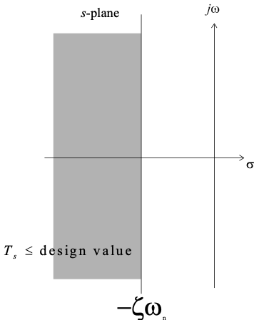
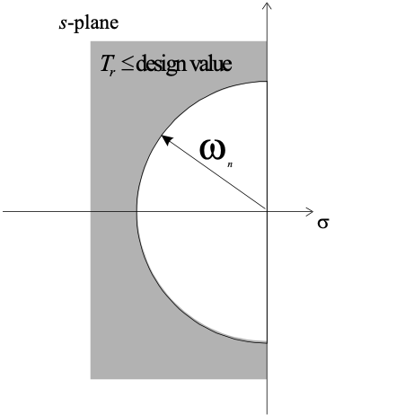

zeta = z(2);
G = tf(wn^2, [1, 2*zeta*wn, wn^2])
subplot(211),pzmap( G),axis([-20, 1, -4, 4])
subplot(212),step( G),axis([0,10,0,2])

Lecturer
Set up MATLAB
cd matlab
pwd
clear all
format compact
This chapter is concerned with the analysis of steady-state and transient response performance of control systems.
The second-order system response and its relationship to the closed-loop poles and zeros is revised. The effect of an additional zero or an additional pole on the 2nd order response is examined and pole-zero cancellation is discussed.
System type-number and its relationship to steady-state error response is revised.
You should read sections 4.2 Time Domain Criteria and 4.1 Steady-State Criteria of the Handout Control System Design Methods, Compensation Strategies and Design Criteria.
Where are the system poles and what does the model 2nd Order response look like for each of these cases?
| $\omega_n$ | $\zeta$ |
|---|---|
| 3 | 3 |
| 3 | 1 |
| 3 | 0.8 |
| 3 | 0.5 |
| 3 | 0 |
wn = 3;
z = [3, 2.5, 2, 1.5, 1, 0.9, 0.8, 1/sqrt(2), 0.5, 0.4, 0.3, 0.2, 0.1, 0];
zeta = z(2);
G = tf(wn^2, [1, 2*zeta*wn, wn^2])
subplot(211),pzmap( G),axis([-20, 1, -4, 4])
subplot(212),step( G),axis([0,10,0,2])
Or download and run this script second_resp.m in MATLAB.

$$T(s) = \frac{\omega _n^2}{s^2 + \zeta {\omega _n}s + \omega _n^2}$$



Percentage overshoot is related to damping
$$\%OS = \exp\left(\frac{-\pi\zeta}{\sqrt{1-\zeta^2}}\right)\times 100$$

First normalize transfer function:
Then add a zero
$$G(s) = \frac{C(s)}{R(s)}=\frac{\left(\frac{s}{\alpha\zeta\omega_n}\right)+1}{\left(\frac{2}{\omega_n}\right)^2+2\zeta\left(\frac{s}{\omega_n}\right)+1}$$Note that $\alpha$ is a multiplier of the real part of the complex poles $\zeta\omega_n$.
Matlab demo (run zero2nd.m):
zero2nd


Design curves (see handout):

Note that $\alpha$ is a multiplier of the real part of the complex poles.
Matlab demo (run pole2nd.m):
pole2nd


Design curves (see handout):

Because the time response of many real systems will be dominated by two or three low frequency poles, a complex high order system can often be simplified by ignoring the effects of high-frequency poles and zeros or a pole that is effectively cancelled by a zero. This MATLAB script file demonstrates this.
Matlab demo (Run reduction.m)
In this example we ignore any poles or zeros that are located 4 or more times the real part of the dominant poles $s = -1 \pm j$ or poles that a cancelled by a closed-loop zero and see that the seventh order system is effectively only a third-order system.
sigma = 1;
wd = 1;
disp('Full order system')
zeros = [-6*sigma; -3.2*sigma]
poles = [-9*sigma
-7*sigma+j*2*wd
-7*sigma-j*2*wd
-3*sigma
-2*sigma
-sigma+j*wd
-sigma-j*wd]
g = zpk(zeros,poles,prod(abs(poles))/prod(abs(zeros)));
subplot(121)
pzmap(poles,zeros)
subplot(122)
step(g)

Now remove redundant terms
Step 1: remove high frequency pole at $-9*\sigma$
z1 = zeros
p1 = poles(2:7)
g1 = zpk(z1,p1,prod(abs(p1))/prod(abs(z1)));
subplot(121)
pzmap(p1,z1)
subplot(122)
step(g,g1)

Step 2: remove complex hf pole pair
z2 = z1
p2 = p1(3:6)
g2 = zpk(z2,p2,prod(abs(p2))/prod(abs(z2)));
subplot(121)
pzmap(p2,z2)
subplot(122)
step(g,g1,g2)

Step 3: remove hf zero
z3= z2(2)
p3 = p2
g3 = zpk(z3,p3,prod(abs(p3))/prod(abs(z3)));
subplot(121)
pzmap(p3,z3)
subplot(122)
step(g,g1,g2,g3)

Step 4: remove pole-zero cancellation terms
z4= []
p4 = p3(2:4)
g4 = zpk(z4,p4,prod(abs(p4))/prod(abs(z4)));
subplot(121)
pzmap(p4,z4)
subplot(122)
step(g,g1,g2,g3,g4)

Step 5: remove last non-dominant pole')
z5 = z4
p5 = p4(2:3)
g5 = zpk(z5,p5,prod(abs(p5))/prod(abs(z5)));
subplot(121)
pzmap(p5,z5)
subplot(122)
step(g,g1,g2,g3,g4,g5)

Original system
g
Reduced order system
g4
subplot(221)
pzmap(poles,zeros)
subplot(222)
step(g)
subplot(223)
pzmap(p4,z4)
subplot(224)
step(g,g4)

What are the steady-state performance criteria?
For a unity-gain negative feedback system with open-loop transfer function Go(s) the steady-state error (SSE) response of the closed-loop system is related to system type number according to the table shown below.
| System Type Number | ||||
| Type 0 | Type 1 | Type 2 | ||
| Type of input | SSE | Step | Velocity | Acceleration |
| Step | $$\frac{1}{1+K_p}$$ | $$\frac{1}{1+K_p}$$ | $\infty$ | $\infty$ |
| Ramp | $$\frac{1}{K_v}$$ | $$0$$ | $$\frac{1}{K_v}$$ | $\infty$ |
| Parabola | $$\frac{1}{K_a}$$ | $$0$$ | $$0$$ | $$\frac{1}{K_a}$$ |
Position error constant for step input: $R(s) = 1/s$:
$$K_p = \lim_{s\to\infty}\;G_o(s)$$Velocity error constant for ramp input: $R(s) = 1/s^2$:
$$K_v = \lim_{s\to\infty}\;sG_o(s)$$Acceleration error constant for parabolic input: $R(s) = 1/s^3$:
$$K_a = \lim_{s\to\infty}\;s^2G_o(s)$$For these models calculate the error response ($E(s) = G_o(s)N_d(s)$ for the "disturbance rejection" case and $E(s) = R(s) - C(s)$ for the "non-unity-gain-feedback") case and use the final value theorem to calculate the steady state step error.
Compare your result with the result of the simulation.
You should note that in both cases the plant transfer function has type number 1. Do the rules of system type number as you understand them carry over to these special cases?
Assuming that the system is originally at steady-state ($E(s) = R(s) - C(s) = 0$) what is the steady-state error to a step change in the disturbance in $n_d(t)$? ($N_d(s) = 1/s$)

[Model file disturbance_rejection.mdl]
disturbance_rejection
non_unity_gain_feedback
The System Metrics section of the Control Systems Wikibook amplifies some of the topics covered in this chapter.
The topics covered in this chapter are also amplified in